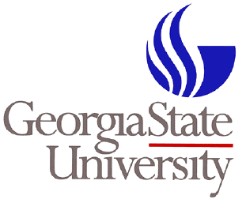
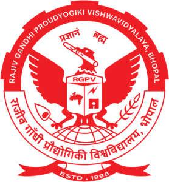

Georgia State University Atlanta GA
Degree: Ph.D. (2021 - present) Major: Computer Science GPA : 3.82 / 4.0
Georgia State University Atlanta GA
Degree: Masters Of Science (2014-2016) Major: Computer Science GPA : 3.54 / 4.0
Indira Gandhi National Open University New Delhi India

Degree: Post Graduate Diploma in Information Security (2011-2014) Major: Information Security Percentage : 70.24 / 100
Rajiv Gandhi Technical University Bhopal India
Degree: Bachelors Of Engineering (2007-2011) Major: Information Technology Percentage : 70.24 / 100